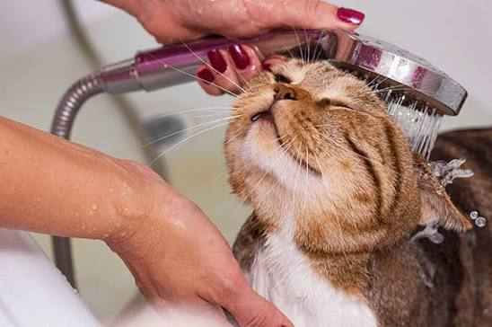
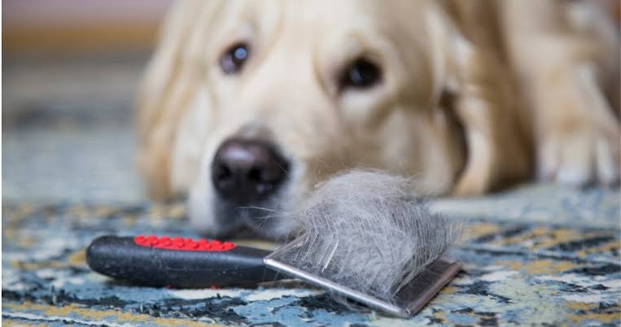
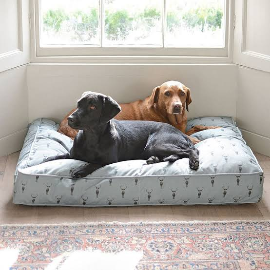

SU BIENESTAR COMIENZA EN CASA
Pequeños cuidados para cada día
Conoce algunas formas sencillas de mantener a tu compañero limpio y cómodo.

Un baño adecuado
Báñala cuando lo necesite y utiliza productos especiales para su especie. Evita los baños excesivos.

Cepilla su pelaje
Cepillarla con regularidad ayuda a retirar el pelo suelto y a evitar nudos.

Cuida sus dientes
Utiliza productos dentales para mascotas y consulta al veterinario sobre su rutina de limpieza.

Mantén limpio su espacio
Lava sus cobijas, limpia sus platos y conserva ordenado el lugar donde duerme y come.
🐾 Revisa sus patitas
Después de los paseos, revisa sus patas y límpialas suavemente cuando estén sucias.
El cariño está en los detalles
Dedicarle tiempo a sus cuidados ayuda a que se sienta cómoda, limpia y querida.